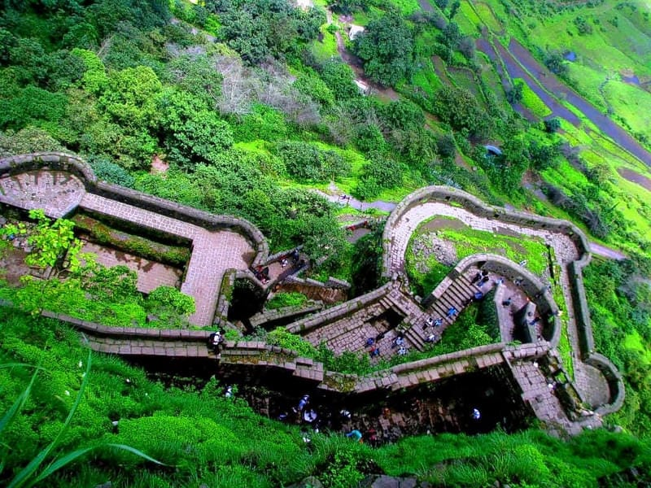

Lohagad is one of the strongest hilltop forts near Lonavala in Maharashtra. Lohagad Fort is also a very popular destination for history enthusiasts. Located on the Sahyadri ranges, the fort acts as a divider between the Indrayani and Pavna river basins.
The name Lohagad arrived from two words – ‘Loha’ means iron whereas ‘Gad’ means fort. Lohagad Fort has three giant and immensely strong iron gates, probably are the origin of the fort’s name. The fortress is therefore popular as Lonavala Iron Fort as well.
Lohagad Fort rises at a height of 1,033 meters (3,389 feet) above sea level. The scenic beauty of the fort make it a best trekking place in monsoon near Pune and Lonavala. The fort connects to neiboring Visapur Fort by a small range. Visapur and Lohagad forts later represnted a joint fortification to strengthen the protection of Lohagad, the treasury of Maratha Empire.